Research Findings and Website Comparisons
As part of our research, we analyzed several industry-leading websites in the camera equipment space. We have identified key components and features that set these websites apart. Below, we highlight five web pages as references and showcase the corresponding changes we have implemented on our website.
Reference 1: Mozilla (Home Page)
Visit Reference website by Clicking Here!
Reference Website
Mozilla.org is the official website of the Mozilla Foundation, a non-profit organization that advocates for an open and accessible internet. The reasons to choose this website as a reference for home page is its way of showcasing home page. Its overall design way of puting images and text aside and mostly telling less but providing more and effective information for given images. Its makes user more interested and visit there other pages. Its easy to navigate and user has full experience from it.
Changes on Our Website
Drawing inspiration from Mozilla Home page showcasing system, we have integrated a similar feature into our own
website. Our enhanced home page showcasing system offers a more refined user experience, empowering visitors to
quickly navigate and find relevant content based on their preferences.
To enhance user engagement, we have implemented a captivating hero banner that sets the stage for the content
users can expect. Additionally, we have added a featured products from our product page with a image silder so
that the users can quickly focus on what product has a better sell and discounts.
Furthermore, recognizing the importance of other page we have added a short description for each page and add a
button so that user can quickly navigate to those area. We also have added a contact Us setion so that user can
contat us for necessary query.
Through these enhancements, we have significantly improved the browsing experience for our users, ensuring they
can effortlessly discover and explore the perfect camera-related titles that align with their interests. Our
goal is to create a user-friendly environment that not only provides informative content but also encourages
active participation and a sense of connection with our audience.
| Reference Page | Our Home Page |
|---|---|
| 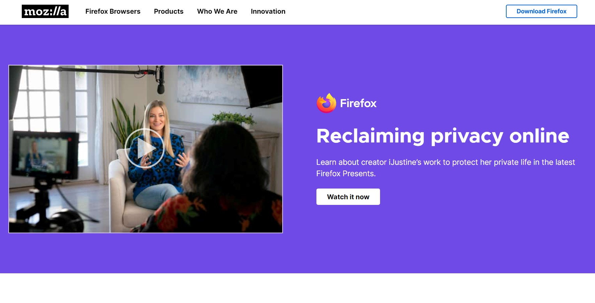 | 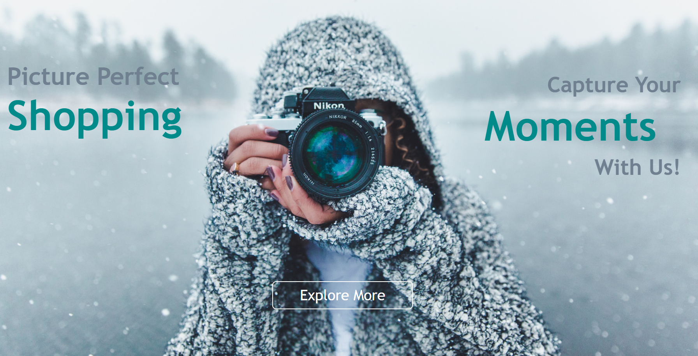 |
| Although the Hero banner does not look too similar but we have take inspiration from those pages make changes through it. | |
| 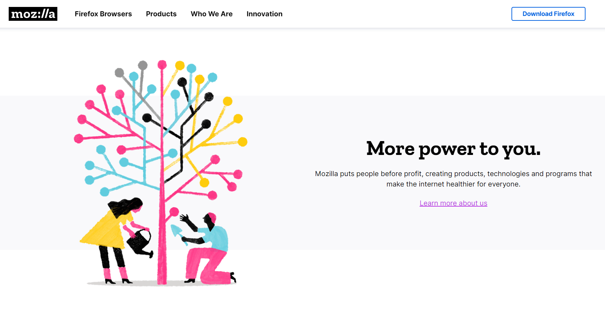 | 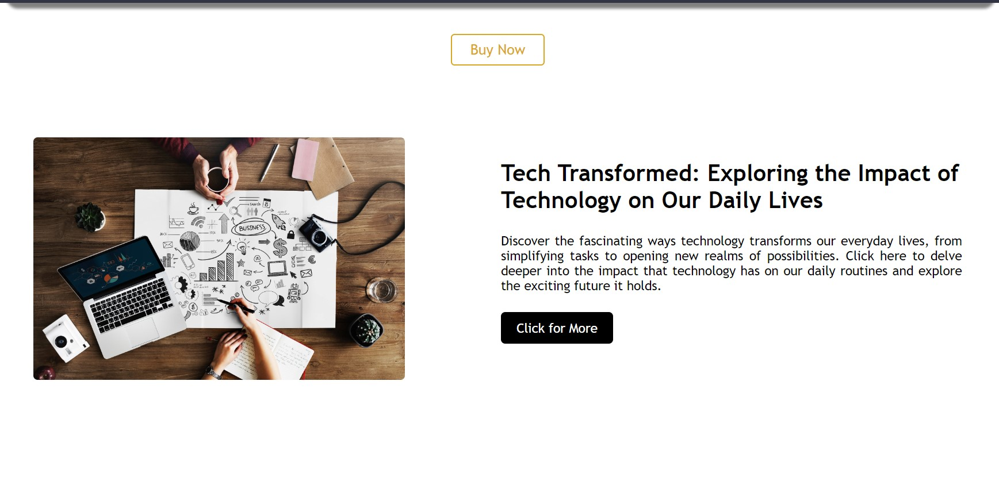 |
| 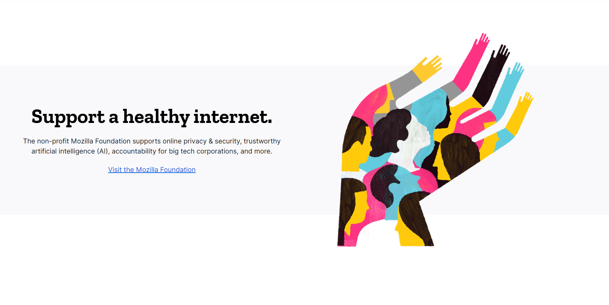 | 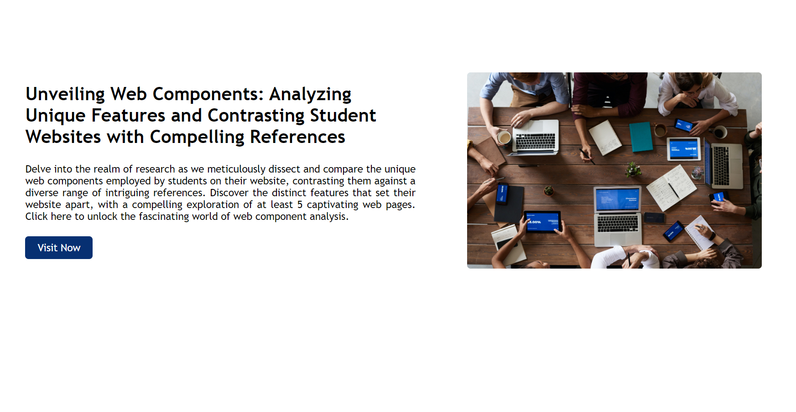 |
| Likewise, we like the way of showcasing their page in a way user feel more attracted to visit other part of page and they also wrote only the necessary part to be shown. | |
Reference 2: BroadwayInfoSys (Blog Page)
Visit Reference website by Clicking Here!
Reference Website
Broadway Infosys Nepal is a renowned IT training institute located in Nepal, offering a comprehensive range of
technical courses and training programs.
One standout feature that captured our attention is their innovative approach to presenting the Blog page.
Utilizing visually appealing cards, each accompanied by captivating images, proper headings, and engaging text
styles, Broadway Infosys ensures an immersive browsing experience. Users can effortlessly explore a wide array
of topics and effortlessly access any blog page of their interest simply by clicking on the corresponding image
or title within the card.
This unique feature not only enhances the overall aesthetics of the website but also facilitates seamless
navigation and encourages users to delve deeper into the blog content. Broadway Infosys' user-friendly design
and intuitive browsing capabilities contribute to an enriched learning environment for individuals seeking
valuable insights and knowledge in the field of IT.
Overall, Broadway Infosys Nepal stands out as a leading IT training institute, offering an extensive selection
of technical courses and demonstrating a commitment to providing an engaging and interactive user experience
through their exceptional blog page design.
Changes on Our Website
Drawing inspiration from Broadway Infosys's impressive blog showcasing system, we have integrated a similar
feature into our own website. Our enhanced blog page showcasing system offers a more refined user experience,
empowering visitors to quickly navigate and find relevant content based on their preferences.
To enhance user engagement, we have implemented a captivating hero banner that sets the stage for the content
users can expect. Additionally, we have carefully curated a selection of essential cards, each presenting
concise yet comprehensive information about the provided topics. These cards allow users to easily skim through
the available options and select the blog titles that interest them the most.
Furthermore, recognizing the importance of fostering interaction, we have incorporated a reply section where
users can engage with us, providing valuable feedback or seeking additional information. This feature encourages
a sense of community and establishes a platform for users to connect and engage with us in the near future.
Through these enhancements, we have significantly improved the browsing experience for our users, ensuring they
can effortlessly discover and explore the perfect camera-related blog titles that align with their interests.
Our goal is to create a user-friendly environment that not only provides informative content but also encourages
active participation and a sense of connection with our audience.
| Reference Page | Our Blog Page |
|---|---|
| 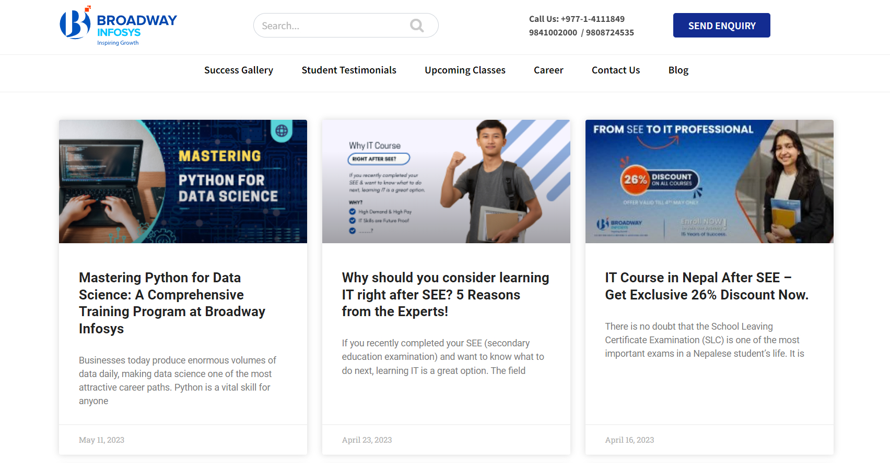 | 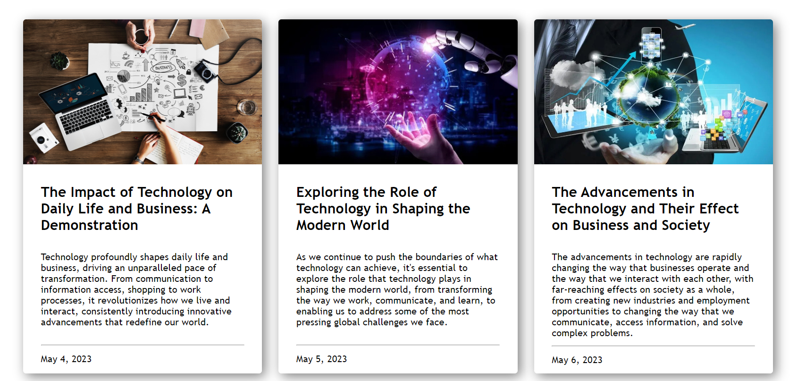 |
| As you can see we have applied same card design but we have enhanced it more by making the font size bigger and more easier for our user to navigate through with proper knowledge of what they are into. | |
| 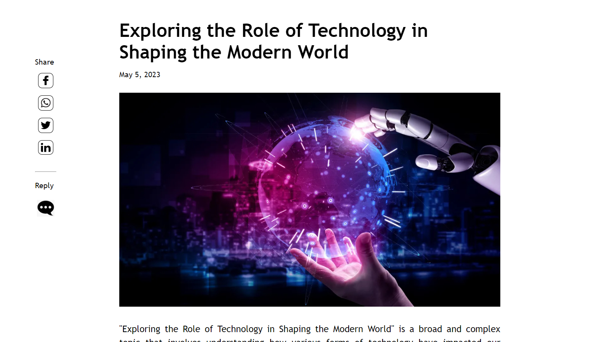 | |
| Likewise, we liked the idea of auto re-direct to reply section when clicked on reply button so, we have added a responsive Reply button with some changes to automatically re-direct to reply form for necessary query. | |
| 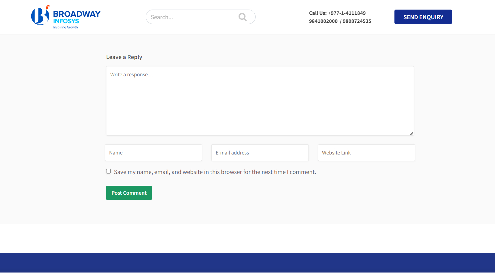 | 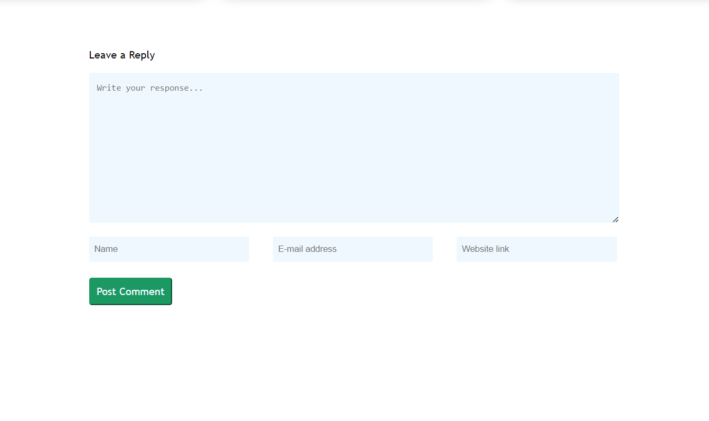 |
| Finally, This is the re-directed page when we click on reply button. | |
Reference 3: Interact Nepal (About Us Page)
Visit Reference website by Clicking Here!
Reference Website
Interact District 3292 Nepal and Bhutan is the facilitating body of all the Interact clubs in Nepal and
BhutanInteract District 3292 Nepal and Bhutan is the facilitating body of all the Interact clubs in Nepal and
Bhutan.
One standout feature that captured our attention is the hover effect and its way of showcasing team images with
its detail in a card.
Changes on Our Website
Drawing inspiration from Interact Nepal portfolio showcasing system, we have integrated a similar feature into
our own website. We have enhanced our website by making user able to view more on clicking the image.
To enhance user engagement, we have implemented a captivating card which showcases a detail portfolio of ourteam
members.
Furthermore, we have also implemented a feedback form so that user can provide us proper feedback and make us
konw waht can we do to make things better.
Through these enhancements, we have significantly improved the browsing experience for our users, ensuring they
can effortlessly discover and explore the perfect camera-related blog titles that align with their interests.
Our goal is to create a user-friendly environment that not only provides informative content but also encourages
active participation and a sense of connection with our audience.
| Reference Page | Our About Us Page |
|---|---|
| 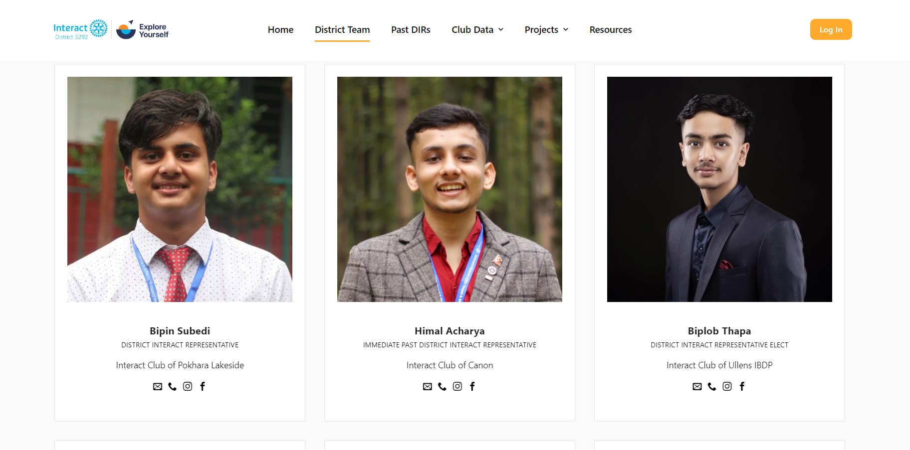 | |
| We implemented a similar hover effect but difference in my term like user is able to learn more About Us by clicking the image or simply by clicking the button "View More". | |
Reference 4: Cloudfactory (Contact Us Page)
Visit Reference website by Clicking Here!
Reference Website
Cloudfactory is a company that specializes in providing data labeling and annotation services for machine
learning and artificial intelligence (AI) applications.
One standout feature that captured our attention is the way of showasing the contact us form. It's easier to
follow and user can easily interact with the team members.
Changes on Our Website
Drawing inspiration from Cloudfactory COntact Us showcasing system, we have integrated a similar feature into
our own website. We have enhanced our website by making user able to contact Us through other social media
sources and a map to figure out our location more easily.
To enhance user engagement, we have implemented a proper e.g. as a placeholder so that user can know what to
write in the given fields.
Through these enhancements, we have significantly improved the browsing experience for our users, ensuring they
can effortlessly discover and explore the perfect camera-related blog titles that align with their interests.
Our goal is to create a user-friendly environment that not only provides informative content but also encourages
active participation and a sense of connection with our audience.
| Reference Page | Our About Us Page |
|---|---|
| 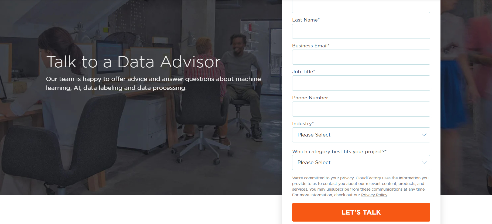 | 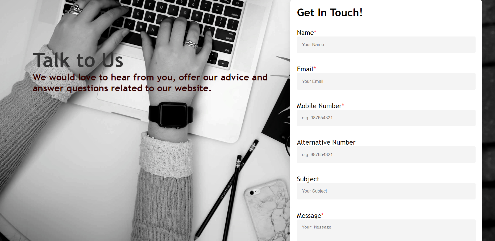 |
| We have implemented a similar form but added a little more context to the overall page to make user more accessable to with us further enhance our relation. | |
Reference 5: TheCameraStore (Product Page)
Visit Reference website by Clicking Here!
Reference Website
A camera shop is a specialized retail store that caters to photography enthusiasts and professionals. It offers
a wide range of cameras, lenses, accessories, and related equipment to meet the needs of photographers of all
levels.
One standout feature that captured our attention is the way of showasing its navigation as well as it UI/UX. We
also like how it displays its card, it makes user more easy to accessable.
Changes on Our Website
Drawing inspiration from TheCameraStore showcasing system, we have integrated a similar feature into our own
website. We have enhanced our website by making user able to navigate through the products that they like.
To enhance user engagement, we have implemented a visually appealing cards so that user can find what they are
expecting.
Through these enhancements, we have significantly improved the browsing experience for our users, ensuring they
can effortlessly discover and explore the perfect camera-related blog titles that align with their interests.
Our goal is to create a user-friendly environment that not only provides informative content but also encourages
active participation and a sense of connection with our audience.
| Reference Page | Our Product Page |
|---|---|
| 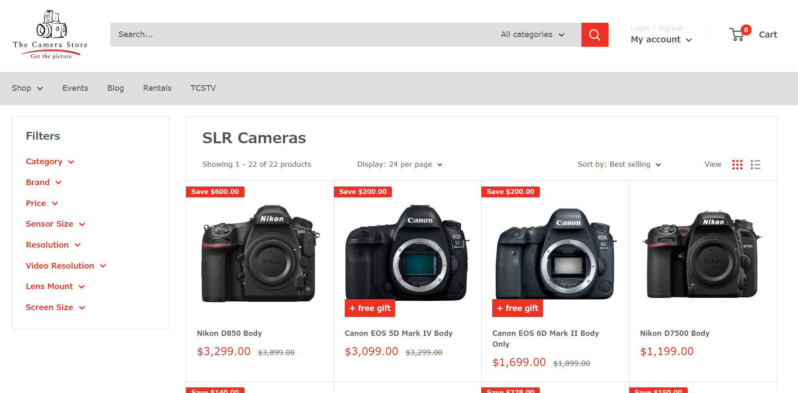 | 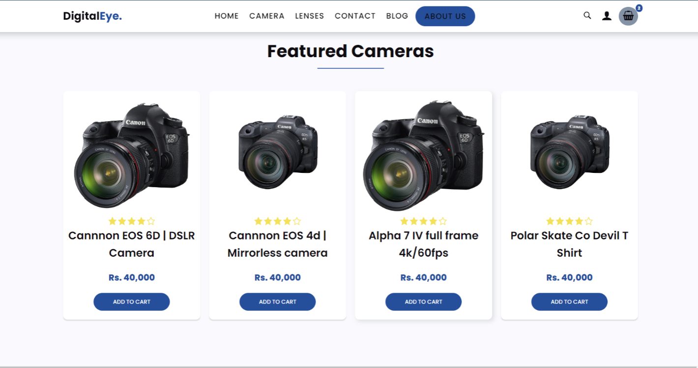 |
| We have implemented a similar form but added a little more context to the overall page to make user more accessable to our product and other pages. | |